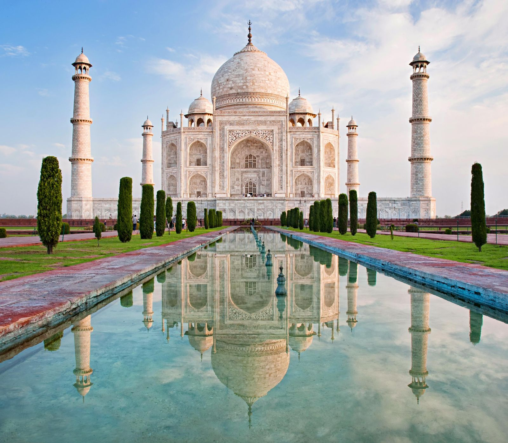
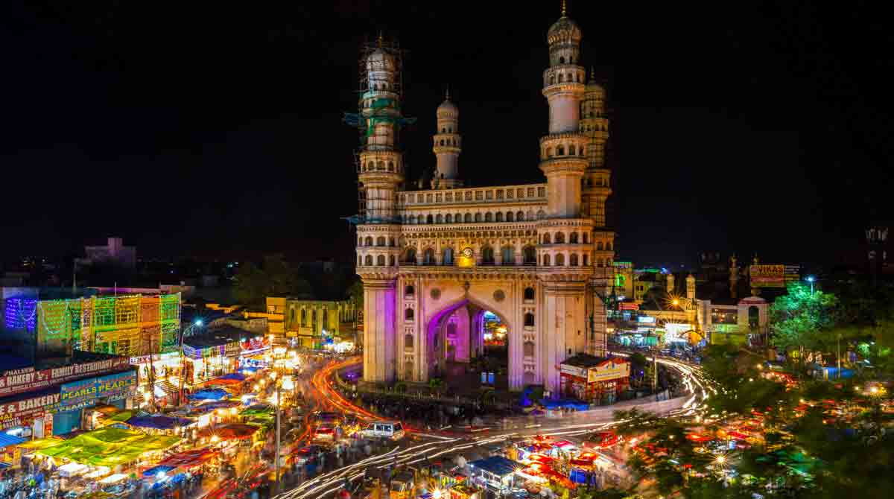
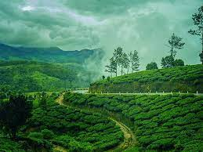

Most Beautiful Places to Visit in India

Taj Mahal
Location: Agra, Uttar Pradesh
The Taj Mahal is an iconic ivory-white marble mausoleum...

Kedarnath
Location: Uttarakhand
Kedarnath is a holy town located in the Rudraprayag district of Uttarakhand...

Charminar
Location: Hyderabad, Telangana
Charminar is a historical monument and mosque located in the heart of Hyderabad...

Araku Valley
Location: Andhra Pradesh
Araku Valley is a scenic hill station in the Eastern Ghats...

Kerala
Location: kerala
munnar is a land of greenary and eco friendly nature containig...

Amritsar
Location: Punjab
Golden temple is a place where a holy temple is located and the...